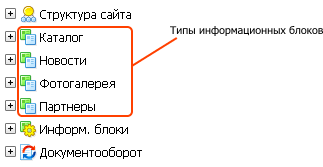

Создание и редактирование типов информационных блоков
В этом разделе
Типы информационных блоков в системе "1C-Битрикс: управление сайтом" создаются и при помощи формы Новый тип информационных блоков. Каждый тип информационного блока, созданный в системе, автоматически добавляется в левое меню административного раздела:

Для изменения параметров типа инфоблоков служит форма Редактирование типа информационных блоков.
Контекстная панель
| Кнопка | Описание |
| Список | Переход на страницу со списком типов информационных блоков. |
| Создать | Создание нового типа информационных блоков. Отображается при редактировании существующего типа инфоблоков. |
| Удалить | Удаление редактируемого типа информационных блоков.
Важно! Все информационные блоки данного типа также будут удалены.
|
Форма редактирования
Закладка Основное
Данная форма служит для настройки основных параметров типа информационных блоков.
| Поле | Описание |
| *Идентификатор (ID) | Код, однозначно идентифицирующий тип инфоблоков в системе. Должен содержать только латинские символы. |
| Использовать древовидный классификатор элементов по разделам | Если этот флаг установлен, информационные блоки данного типа будут иметь иерархическую структуру, т.е. они могут быть разбиты по разделам и подразделам (названия разделов и подразделов задаются в поле Разделы).
Такая организация элементов может быть применена, например, для объединения товаров в группы или классификации растений по родам, видам и т.п.
|
| Языкозависимые названия и заголовки объектов: |
| Язык | *Название | Разделы | Элементы |
| [1] | [2] | [3] | [4] |
| Поле | Описание |
| [1] Язык | Список языков, используемых в системе. Названия типов, а также разделов и элементов информационных блоков указываются отдельно для каждого языка. |
| [2] *Название | Название типа инфоблоков для данного языка (например, Каталог). |
| [3] Разделы | Название разделов инфоблоков данного типа для этого языка (например, Группы). |
| [4] Элементы | Название элементов инфоблоков данного типа для этого языка (например, Товары). |
|
* Поля, обязательные для заполнения.
Закладка Дополнительно
| Поле | Описание |
| Использовать экспорт в RSS | Если этот флаг установлен, содержимое инфоблоков данного типа может экспортироваться в RSS-файл и сохраняться в директории, указанной в поле Путь к экспортируемым RSS файлам в форме настроек модуля Информационные блоки. |
| Индекс сортировки | Относительный "вес", влияющий на порядок расположения типов информационных блоков в меню административного раздела. |
| Файл для редактирования элемента, позволяющий модифицировать поля перед сохранением | Полный путь к файлу, отвечающему за обработку полей элементов инфоблоков данного типа при сохранении. Может быть использован для модификации данных перед сохранением элементов в административном разделе.
Важно! Это поле предназначено только для использования разработчиками. См. Пользовательские формы редактирования |
| Файл с формой редактирования элемента | Полный путь к файлу-обработчику вывода интерфейса редактирования элемента. Может быть использован для создания кастомизированной формы редактирования элементов данного типа.
Важно! Это поле предназначено только для использования разработчиками. См. Пользовательские формы редактирования |
Кнопки управления
| Кнопка | Описание |
| Сохранить | Сохранение внесённых изменений. Переход к списку типов информационных блоков. |
| Применить | Сохранение внесённых изменений. Продолжение редактирования типа инфоблоков. |
| Отменить | Отмена внесённых изменений. Возврат первоначальных значений параметров. |
Создание нового типа информационного блока
- Откройте страницу создания нового типа информационных блоков: Административный раздел > Контент > Информационные блоки > Типы информационных блоков.
- Для создания нового типа информационных блоков выберите пункт Добавить новый тип в меню страницы.
- В закладке Основное укажите символьный код нового типа информационного блока в поле Идентификатор (ID). Код представляет собой произвольный набор латинских символов, понятный администратору сайта. Например, символьный код типа информационных блоков Каталог может быть catalog.
- Если подразумевается, что информационные блоки создаваемого типа будут иметь иерархическую структуру (т.е. содержать разделы и подразделы), то установите флаг в поле Использовать древовидный классификатор элементов по разделам.
- Введите название типа информационных блоков для разных языков.
- Если создаваемый тип информационных блоков содержит разделы, укажите название разделов. Например, информационные блоки типа Каталог могут состоять из групп.
- Укажите название элементов для данного типа информационных блоков. Например, элементами информационных блоков типа Каталог могут быть товары, а элементами инфоблоков типа Новости – новости.
- В закладке Дополнительно установите флажок в чекбоксе Использовать экспорт в RSS, если планируется экспортировать данные в формат RSS.
- Установите Индекс сортировки.
- Если вы планируете использовать дополнительные файлы обработки данных из полей формы, то укажите путь до файлов обработки в поле Файл для редактирования элемента, позволяющий модифицировать поля перед сохранением.
- Если есть необходимость изменить поля формы типа создаваемого инфоблока, то укажите путь до файла с новой формой в поле Файл с формой редактирования элемента.
- Нажмите кнопку Сохранить.
- После сохранения новый тип информационных блоков будет добавлен в административное меню (секция Контент).